Prvi ulazak
Računa nema bez pozivnice: trener ili administrator vas pozove, a vi aktivirate račun iz e-maila.
Aktivacija računa i prijava
- Otvorite e-mail „Pozivnica u BD Samobor” i kliknite poveznicu. Poveznica vrijedi 7 dana.
- Odaberite lozinku od najmanje 10 znakova. Nakon aktivacije ste odmah prijavljeni.
- Sljedeći put se prijavljujete e-mail adresom i lozinkom. Prijava ostaje zapamćena na tom uređaju.
Ako je poveznica istekla, zamolite trenera da vam ponovno pošalje pozivnicu. Stara poveznica tada prestaje vrijediti.
Zaboravljena lozinka: na prijavi kliknite Zaboravljena lozinka?, upišite e-mail i otvorite poveznicu iz poruke. Poveznica vrijedi 30 minuta.
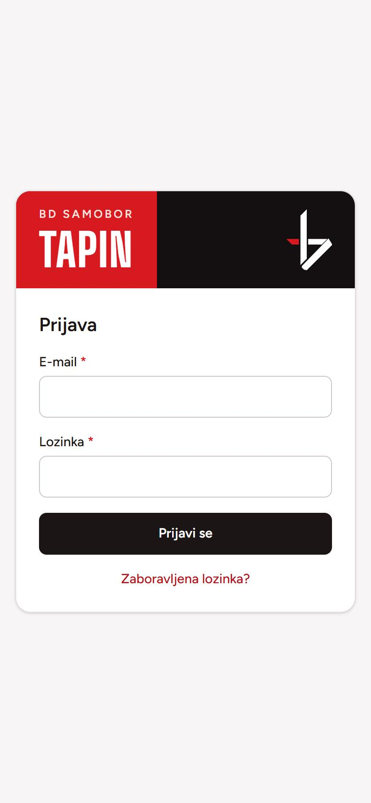
Snalaženje u aplikaciji
Na mobitelu je glavna navigacija na dnu ekrana: Početna, Treninzi, Statistika i Više. Treneri imaju i Prozivku. Crta iznad ikone pokazuje gdje se nalazite.
Pod Više su Moj profil, kod trenera i Članovi i Izvještaji, te Odjava. Na računalu su sve stavke u gornjoj traci.
Sva vremena prikazana su po zagrebačkom vremenu.
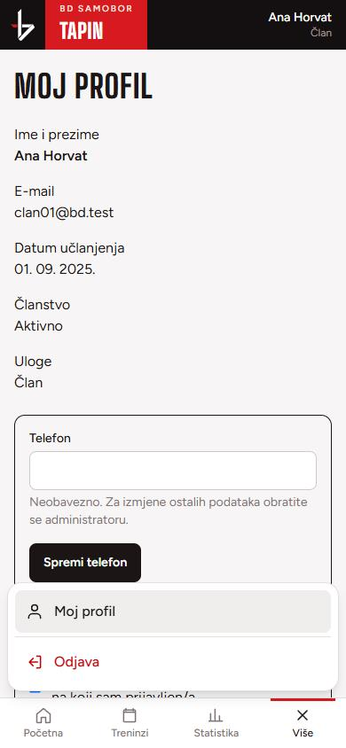
Za članove
Prijava na trening, otkazivanje, vaši treninzi i pojas.
Početna: sljedeći trening
Početna prikazuje sljedeći i drugi sljedeći trening, s datumom, vremenom i trenerom. Ispod svakog piše vaše stanje:
- Prijavljeni ste ili Niste prijavljeni,
- je li trener već evidentirao dolazak.
Prijava i otkazivanje su jedan dodir: Prijavi se ili Otkaži prijavu. Otkazani treninzi su jasno označeni s „Otkazan”, precrtanim vremenom i razlogom.
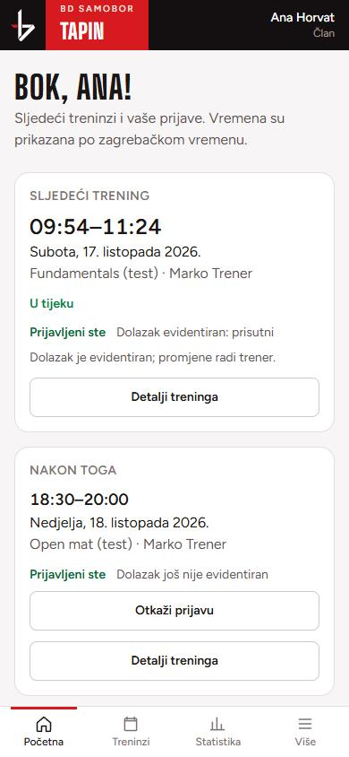
Prijava i otkazivanje prijave
Na detalju treninga (Detalji treninga) vidite status, vrijeme, trenere i svoju prijavu.
- Prijavi se: dobit ćete potvrdu e-mailom. Poruka „Potvrda je u redu za slanje” znači da je e-mail na putu, ne da je već stigao.
- Otkaži prijavu: moguće dok trener ne evidentira vaš dolazak. Nakon toga promjene radi trener.
- Nakon otkazivanja se možete ponovno prijaviti.
Prijava nije dolazak. Trening se broji tek kad trener na prozivci potvrdi da ste bili prisutni. Ako dođete bez prijave, trener vas doda na prozivci i trening se jednako broji.
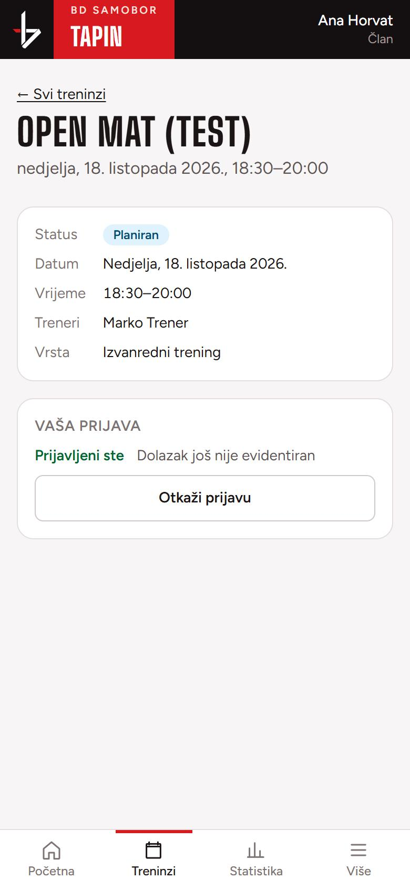
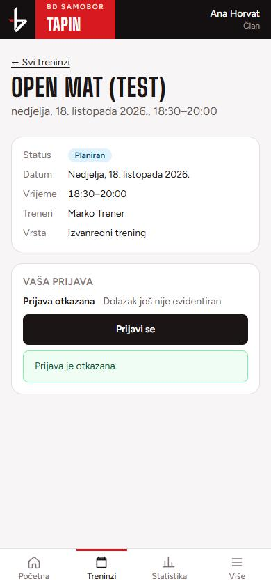
Kalendar treninga
Treninzi prikazuju sve termine po mjesecima. Strelicama prelazite na prethodni ili sljedeći mjesec. Uz svaki trening piše je li Planiran, Održan ili Otkazan te jeste li prijavljeni. Dodir na trening otvara detalj s gumbom za prijavu.
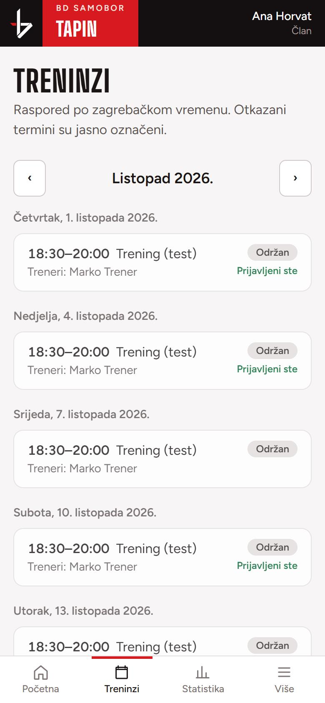
Moja statistika
Broje se samo potvrđeni dolasci na održane treninge. Otkazani treninzi se ne broje, a jedan trening vrijedi najviše jedan dolazak.
- Odrađeni treninzi: ukupno, ovaj mjesec, zadnjih 7 i zadnjih 30 dana. Ispod svakog broja piše točno razdoblje; računa se po datumu treninga, uključujući današnji dan.
- Prijave na održane treninge: koliko ste se puta prijavili, došli, niste došli, te koliko prijava još čeka evidenciju.
- Postotak dolazaka: uz svaki postotak piše od koliko treninga je izračunat. „Dolasci na održane treninge” računaju se od učlanjenja, dok je članstvo bilo aktivno. „Dolazak po prijavi” uzima samo prijave za koje je trener upisao dolazak ili izostanak.
- Treninzi po pojasu: koliko ste treninga odradili u kojem pojasu.
Kad trener ispravi dolazak, statistika se mijenja sama. Gumb Osvježi odmah učitava najnovije brojeve.
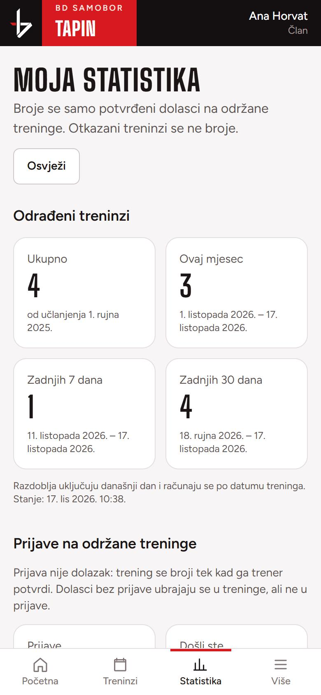
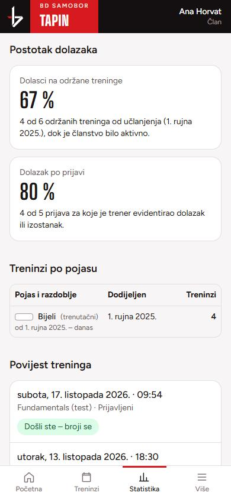
Povijest treninga
Na dnu statistike je popis treninga na koje ste se prijavili ili na kojima ste evidentirani, od najnovijeg. Oznake znače:
- Došli ste – broji se trener je potvrdio dolazak,
- Niste došli bili ste prijavljeni, a trener je upisao izostanak,
- Čeka evidenciju trenera trener još nije označio; to nije izostanak,
- Trening otkazan – ne broji se
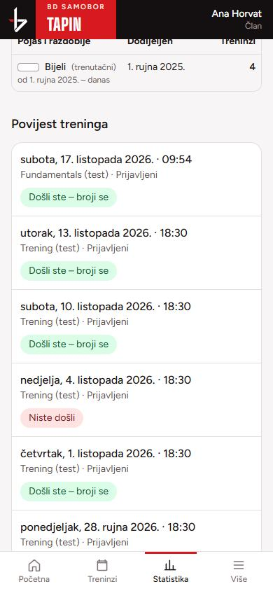
Moj profil i obavijesti
U Više → Moj profil vidite svoje podatke, datum učlanjenja, trenutačni pojas i povijest pojaseva. Sami možete promijeniti broj telefona. Za ostale izmjene (ime, e-mail) obratite se administratoru.
Podsjetnik stiže e-mailom 3 sata prije treninga na koji ste prijavljeni. Možete ga isključiti kvačicom; ostale obavijesti i dalje stižu.
| Kada stiže | |
|---|---|
| Potvrda prijave / otkazivanja | kad se prijavite ili otkažete |
| Podsjetnik | 3 sata prije treninga (može se isključiti) |
| Trening je otkazan / pomaknut | kad trener otkaže ili pomakne trening na koji ste prijavljeni |
| Evidentiran dolazak | kad trener upiše ili ispravi vaš dolazak |
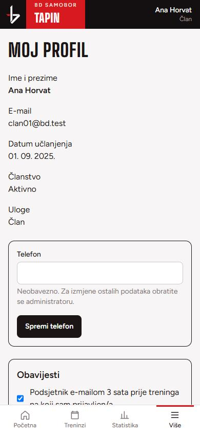
Za trenere
Prozivka, termini, članovi, pojasevi i izvještaji. Trener koji ima i ulogu člana koristi i sve članske mogućnosti iz prethodnog poglavlja.
Prozivka: odabir treninga
Prozivka na vrhu nudi trening koji je u tijeku ili sljedeći (crna kartica Otvori prozivku), a ispod nedavne i nadolazeće treninge s brojem prijavljenih.
Svaki trener može voditi evidenciju za svaki trening; treneri navedeni na terminu su samo informativni.
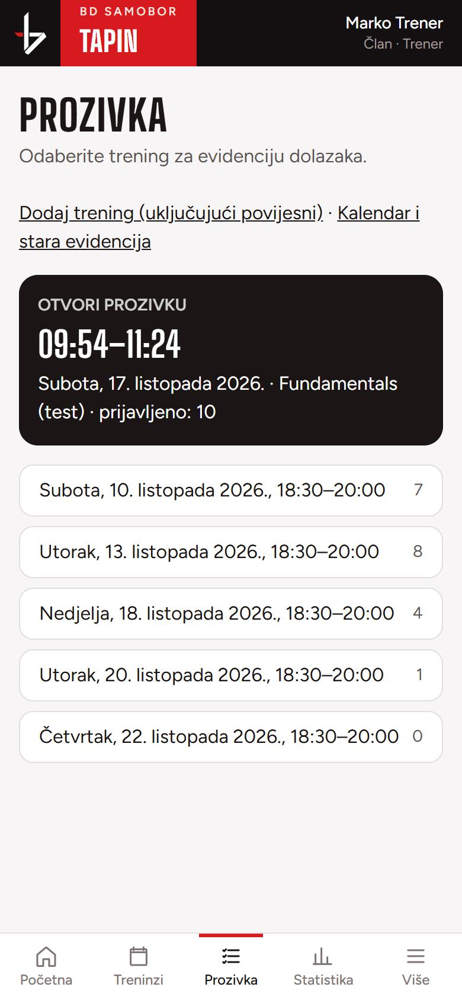
Označavanje dolazaka
Na vrhu su brojevi: Prijavljeni, Prisutni, Odsutni, Nepotvrđeni. Ispod je kartica za svakog prijavljenog člana.
- Dodirnite Prisutan ili Odsutan. Svaki odabir se odmah sprema, nema gumba „Spremi”. Ispod kartice piše Spremanje…, zatim Spremljeno.
- Boja kartice pokazuje stanje: zelena prisutan, crvena odsutan, bijela još nije označeno.
- Pogrešku ispravite drugim gumbom. Poništi oznaku vraća člana na „nije označeno”.
- U polje Napomena možete upisati razlog prije odabira; zapisuje se u povijest.
Svaka stvarna promjena šalje članu e-mail. Ponovni dodir na već odabrano stanje ne šalje ništa.
Ako se pojavi Greška pri spremanju, promjena nije spremljena; pokušajte ponovno. Ako je drugi trener u međuvremenu promijenio istog člana, aplikacija osvježi karticu i vi ponovno odlučite.
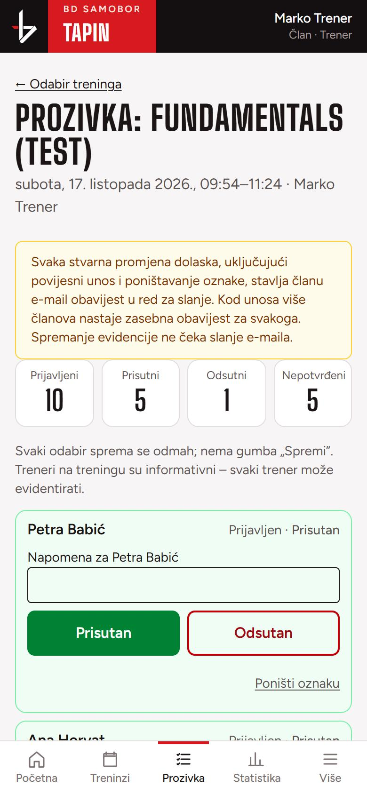
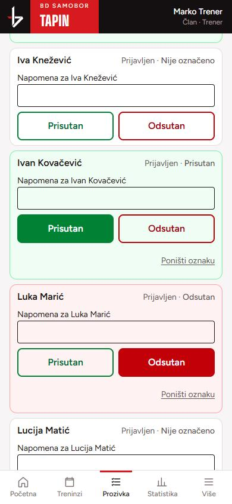
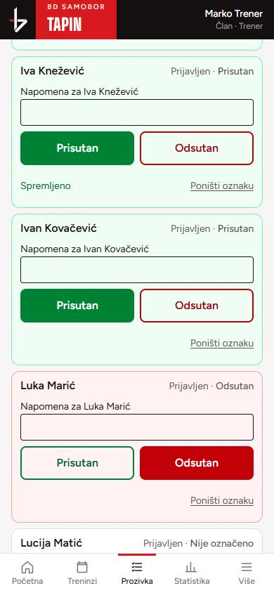
Dodavanje člana koji nije prijavljen
Ispod popisa je Dodaj člana koji nije prijavljen. Upišite barem dva slova imena, prezimena ili e-maila i kod pravog člana dodirnite Prisutan. Član se dodaje na prozivku kao „Bez prijave · Prisutan” i trening mu se broji.
Isto vrijedi za člana koji je otkazao prijavu, a ipak je došao.
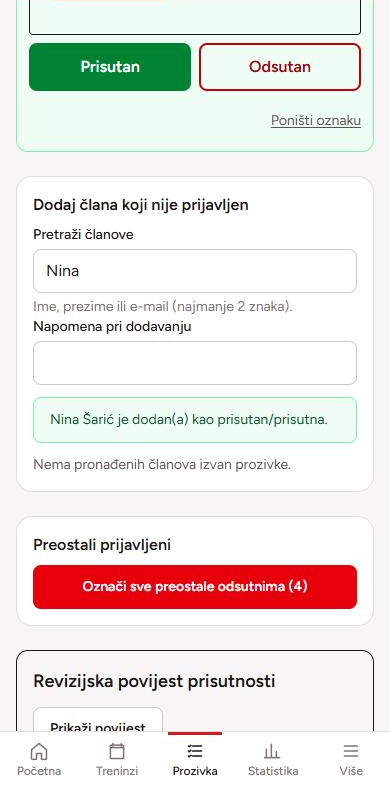
Označi sve preostale odsutnima
Kad su prisutni označeni, gumb Označi sve preostale odsutnima u jednom koraku označi odsutnima sve prijavljene koji još nisu označeni. Prije potvrde vidite njihov popis.
Već označeni članovi i oni koji su otkazali prijavu ne mijenjaju se. Svaki obuhvaćeni član dobiva svoju obavijest. Gumb radi tek nakon početka treninga.
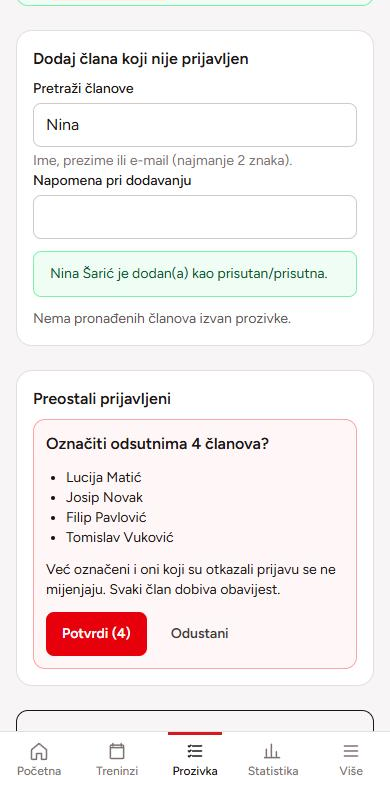
Revizijska povijest
Na dnu prozivke Prikaži povijest otvara sve promjene na tom treningu, od najnovije: tko je promijenio, kada, iz kojeg u koje stanje i kojim putem (pojedinačno, masovno, povijesni unos, ispravak). Povijest se može filtrirati po članu i ne može se mijenjati ni brisati.
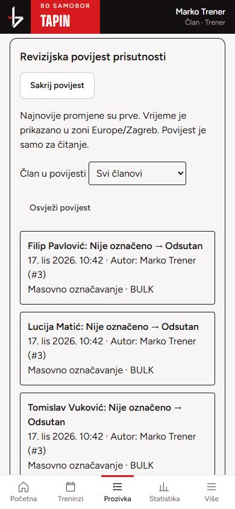
Upravljanje terminom
Na detalju treninga trener vidi broj prijavljenih i odjeljak Upravljanje terminom:
- Prozivka otvara evidenciju tog treninga,
- Pomakni ili uredi ovaj termin mijenja vrijeme, naziv ili trenere samo tog datuma; tjedni raspored ostaje isti,
- Otkaži trening: prije potvrde vidite što se otkazuje i koliko je prijavljenih. Možete upisati razlog. Prijavljeni dobivaju e-mail, a otkazani trening se ne broji u statistici.
Trening koji je počeo ili je održan više se ne može pomaknuti ni otkazati.
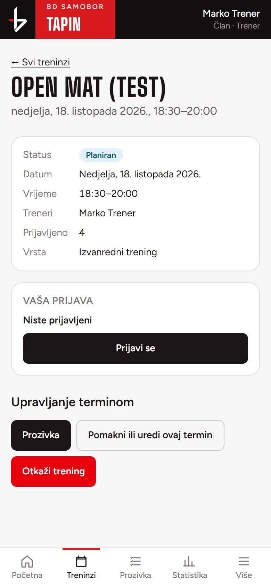
Dodatni i povijesni trening
Na Prozivci poveznica Dodaj trening (uključujući povijesni) otvara obrazac za jednokratni termin izvan tjednog rasporeda (seminar, open mat).
Za trening koji je već održan, a nije bio u aplikaciji, označite Povijesni trening. Termin nastaje kao održan i odmah mu možete upisati dolaske. Dolasci se računaju u statistiku po datumu tog treninga.
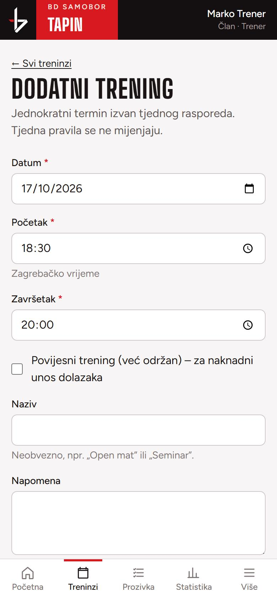
Tjedni raspored
U kalendaru treninga je poveznica na Tjedni raspored: pravila poput „utorak 18:30–20:00”. Iz njih aplikacija sama stvara termine 60 dana unaprijed.
Izmjena pravila mijenja sve buduće termine tog pravila koji još nisu počeli i nisu pojedinačno mijenjani. Prije spremanja vidite koji termini dobivaju novo vrijeme, a koji se otkazuju. Održani termini se ne mijenjaju.
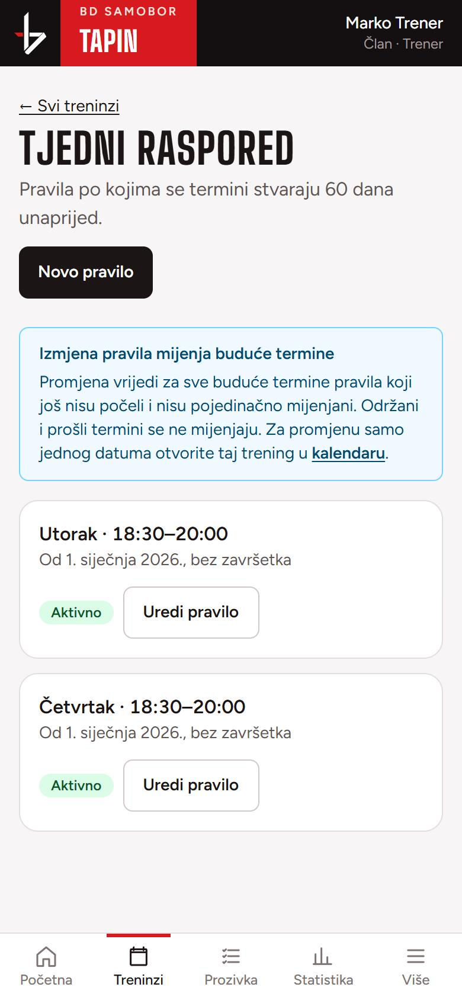
Članovi i pozivnice
Više → Članovi je imenik s pretragom po imenu, prezimenu ili e-mailu i filtrima po članstvu i ulozi. Uz svakog člana piše je li članstvo aktivno i je li račun aktiviran.
Pozovi člana: upišite ime, prezime, e-mail i po želji datum učlanjenja (prazno znači danas), pa Pošalji pozivnicu. Član dobiva e-mail s poveznicom za aktivaciju. Dok je ne prihvati, na njegovom profilu je gumb Ponovno pošalji pozivnicu.
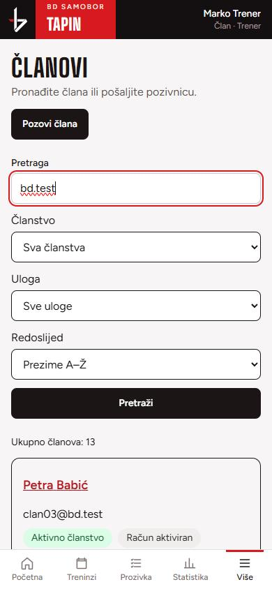
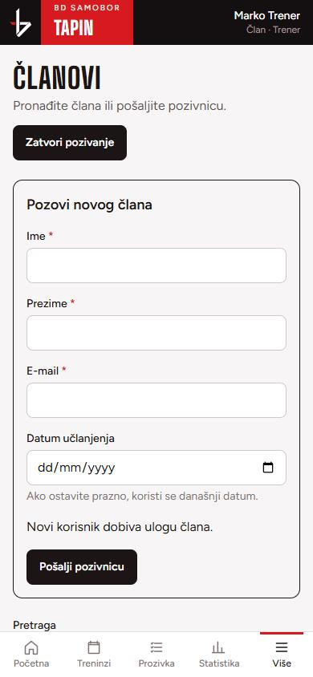
Pojasevi i promocije
Na profilu člana otvorite Povijest pojaseva, promocije i ispravci. Vidite trenutačni pojas, datum dodjele i broj treninga u svakom pojasu.
- Nova promocija: odaberite pojas i stvarni datum polaganja. Kod Nakon treninga trening toga dana ostaje u starom pojasu, a novi se broji od sljedećeg dana. Kod Prije treninga se već taj trening broji u novi pojas.
- Stariji pojas bez poznatog datuma unosi se s kvačicom Datum dodjele nije poznat; aplikacija ne izmišlja datum.
- Pojas se ne briše: pogrešan unos ispravite gumbom Ispravi, uz obavezan razlog. Ispravci su vidljivi u povijesti.
Treninzi se po pojasevima raspoređuju sami prema datumima, pa ispravak datuma ili dolaska odmah mijenja i brojeve.
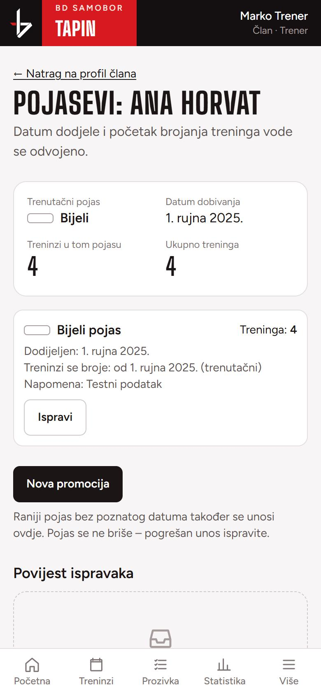
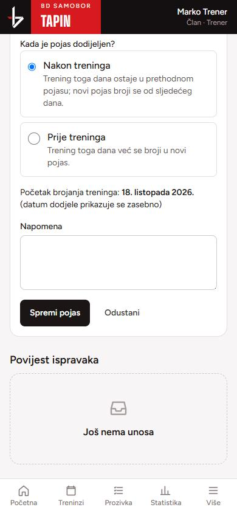
Izvještaji i izvoz
Više → Izvještaji prikazuju dolaske na održanim treninzima za odabrano razdoblje: broj održanih treninga, prosjek prisutnih, dolaske po članu, nedolaske nakon prijave i članove koji dugo nisu dolazili.
Filtrirati možete po razdoblju, trenutačnom pojasu i članu. Isti izvještaj možete preuzeti kao CSV datoteku za Excel.
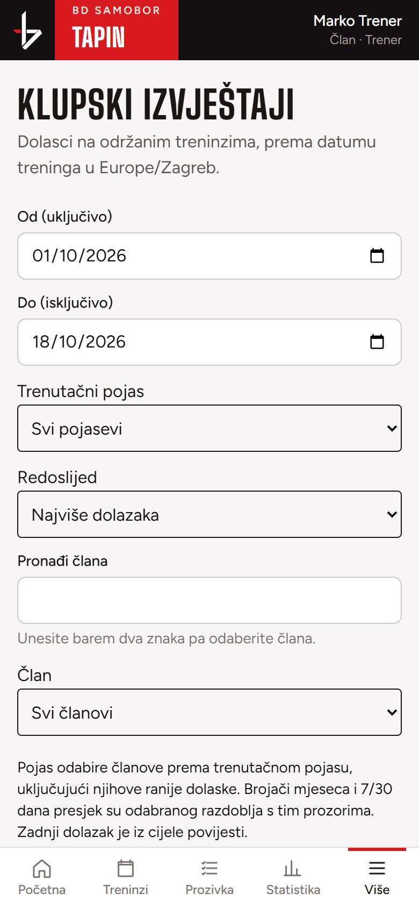
Česta pitanja
- Prijavio sam se, ali se trening ne vidi u statistici.
- Trening se broji tek kad ga trener potvrdi na prozivci i kad je održan. Dok čeka, u povijesti piše „Čeka evidenciju trenera”.
- Zašto ne mogu otkazati prijavu?
- Trener je već evidentirao vaš dolazak ili izostanak. Ako je pogrešno, javite se treneru da ispravi.
- Nije mi stigao e-mail.
- Provjerite mapu s neželjenom poštom. Poruke se šalju u pozadini, pa mogu kasniti nekoliko minuta. Pozivnicu ili poveznicu za lozinku zatražite ponovno.
- Trener sam i pogriješio sam na prozivci.
- Dodirnite ispravno stanje ili Poništi oznaku. Član dobiva novu obavijest, a promjena se vidi u revizijskoj povijesti.
- Mogu li biti i trener i član?
- Da. Isti račun ima obje uloge: prijavljujete se na treninge kao član i vodite prozivku kao trener.